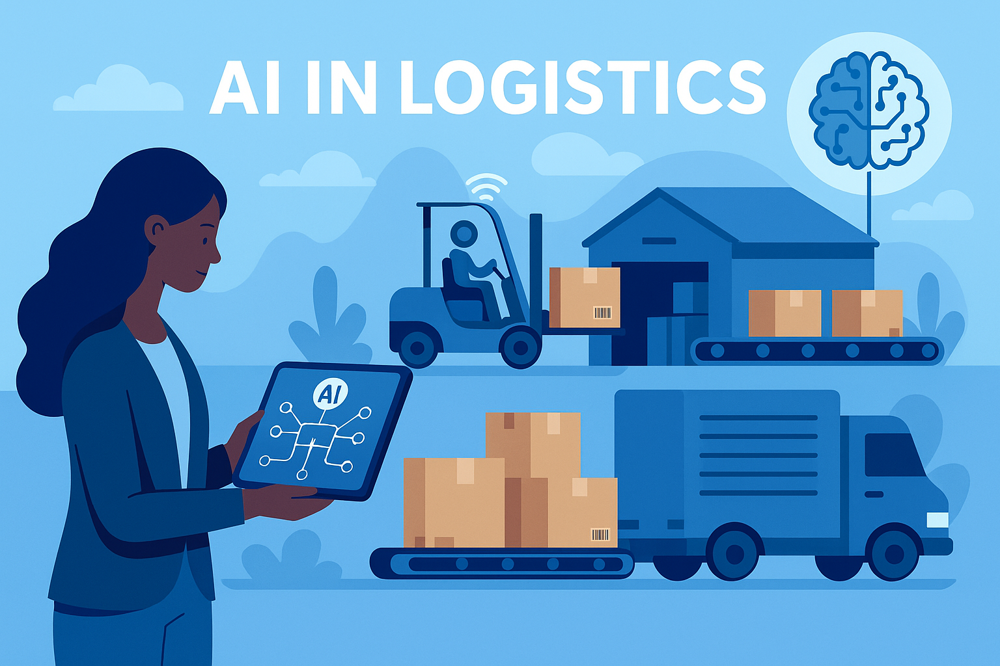
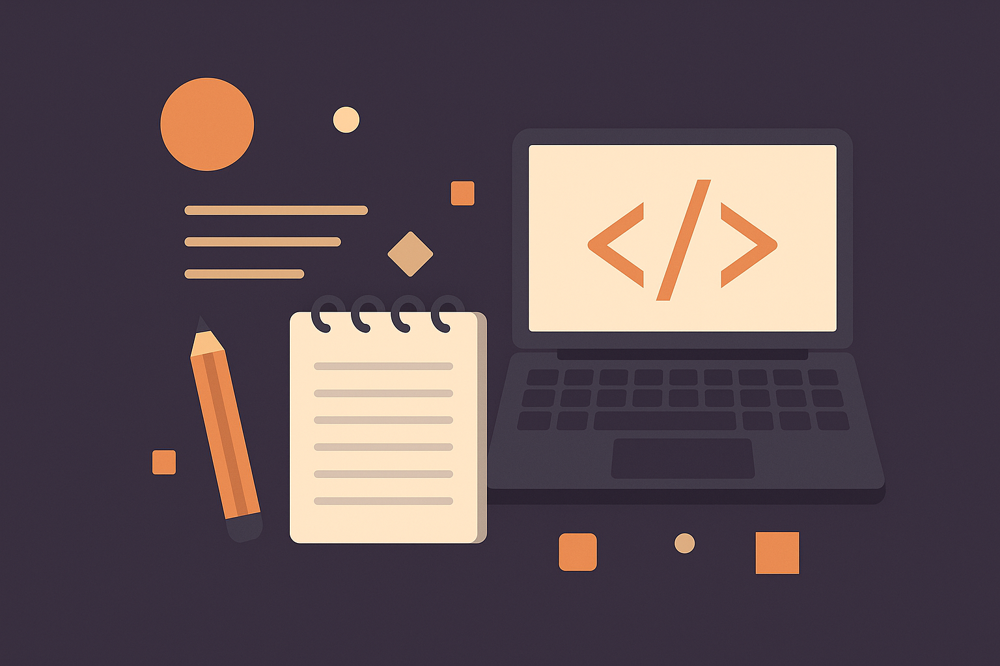

Artificial Intelligence in Logistics
With experience in warehouse environments at Amazon and UPS, I have witnessed firsthand the operational challenges involved in inventory and fulfillment. This has driven my passion for exploring how Artificial Intelligence can be used to solve logistical problems, such as:
- Predictive demand planning using historical sales data
- Automated route optimization for delivery fleets
- Dynamic workforce allocation through AI forecasting
By integrating machine learning models with supply chain platforms, businesses can significantly reduce lead times, improve accuracy in inventory stocking, and minimize resource wastage. I am currently researching Python-based libraries like TensorFlow and Scikit-learn to build basic prototypes for logistics forecasting.

Web Accessibility & Inclusive Design
Another key area of interest is **accessibility-first web development**. This involves building websites and applications that can be used by people of all abilities, including those using screen readers, keyboard-only navigation, or assistive technologies.
My focus areas include:
- Implementing WCAG 2.1 Level AA guidelines
- Using semantic HTML and ARIA labels for assistive tools
- Ensuring strong color contrast and keyboard focus visibility
Through my coursework and hands-on projects, I've learned how to perform accessibility evaluations using tools like WAVE and Lighthouse. I believe accessible design is both a professional responsibility and an ethical obligation in modern software development.
